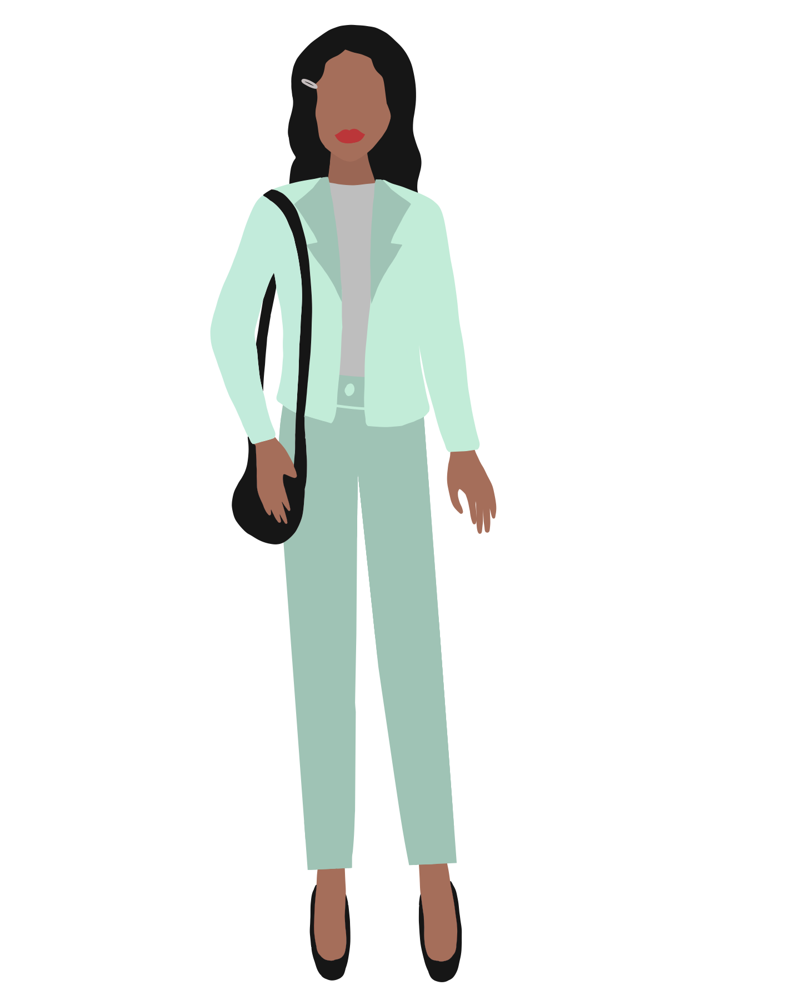
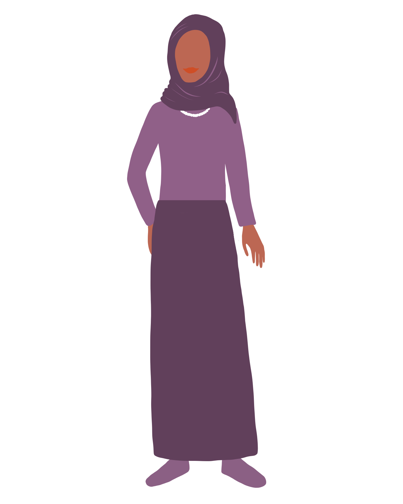

Human biology sophomore Emma Proctor has wanted to be a doctor for a long time, following in her father's footsteps.
"I think it's really interesting, and there's so much to learn about it and that's my main motivation," Proctor said. "There's always new things being discovered, and that really interests me."
Her pursuit of becoming a doctor comes with roadblocks, however.
Proctor said she has already experienced small instances of gender inequality. When she's in a lab group with men, for example, she's noticed how they'll try to take it over and not acknowledge the women.
Photo courtesy Emma Proctor
Other times, Proctor said she'd ask a simple question and have a guy answer in more detail than necessary to show he knows a lot more than he thinks she does.
Though men dominate the field of medicine, Proctor isn't afraid.
"It's definitely something to think about just in terms of opportunities," Proctor said. "It will be a little harder, but I'm not necessarily afraid of it. I know it will be a little more challenging."
The U.S. Department of Labor 2019 data shows that women across the board, earn on average 85% of what men do.
This gap is present also within specific fields, particularly STEM fields. According to a study by the Society of Women Engineers, women in engineering make around 85% of what men in engineering make.
This is also an intersectional issue where further layers of identity that women possess lead to different outcomes. According to the same study, a Black woman earns 87% of a white woman's salary and 62% of a white man's salary in STEM fields. Hispanic women earn 85% of white women's salaries and 61% of white men's salaries in the same field.
These discrepancies extend into non-STEM fields as well.
"It will be a little harder, but I'm not necessarily afraid of it. I know it will be a little more challenging."
Human biology sophomore Emma Proctor
Current and former award-winning female journalists filed a federal lawsuit against the Detroit Free Press in 2017 because they claimed the newspaper underpaid them for years.
The lawsuit specified that male assistant editors had a median wage that was $7.62 per hour more than female median wage. Male photographers made $4.04 more per hour than female photographers. Male reporters made a median wage of $2.03 more than female reporters. Male web designers have a median wage that is $2.85 per hour more than females' median wage. It also showed that female employees' wages grew at a slower rate over time compared to male employee wages.
Emily Maze / The State News
Another study showed that The Washington Post also paid women employees in its newsroom less than men. Disparities in median salaries are the greatest among employees under 40.
MSU Professor Joanne Gerstner, who focuses on sports journalism, said the public questions her ability to do her job more than athletes and coaches.
"Because being a journalist means you're not just at work but you also have the public looking at your work, you've got a lot of different ways people can judge you," Gerstner said.
Childcare is another obstacle for women in the workplace. Gerstner said that if she was a Michigan State football and basketball beat writer for any of the major newspapers, there is no place where she can drop off her kids and do her job.
One positive Gerstner sees about joining the world of sports journalism right now is that the doors are wide open for women. To her, every generation of women that have come since the 1970s has opened more doors for others.
"The best employers, the people you want to work for, will make these changes and make a better workplace because they want your talent," Gerstner said. "And women are talented, and educated and going to college more than ever so you know what, let's go get it."
The State News — offline since 1909
Like what you're reading? This story is also in our latest print issue. Grab a copy on campus or read it online.
Intersections between race, gender identity and sex play a factor in workplace discrimination for women.
Stephanie Nawyn, an associate professor in MSU's Department of Sociology and co-director of academic programs at the Center for Gender in Global Context, said that by identifying as a woman, she experiences various kinds of discrimination. However, by being a white woman, she experiences a lot fewer problems than her women colleagues of color.

Emily Maze / The State News
Additionally, her transgender and non-binary colleagues experience a great deal more discrimination and oppression than she does.
Mansplaining is part of these microaggressions. Nawyn said that because these incidents are consistent, over time it creates this sense that they're not being taken seriously, their contributions are not valued and that their expertise is not respected.
Nawyn said the COVID-19 pandemic has played a big role in women's lives, as they are taking on the burden of this pandemic. Research has shown that since the pandemic started, women have been less productive in their careers than their male counterparts.
"... Men across the board, across different occupations, the majority of them report that they like working at home," Nawyn said. "It gives them more ability to get work done. A minority of women say that."
Currently, women are going from full-time workers to part-time or quitting entirely because they simply cannot manage the balance of caring for their young children or helping kids through online schools and also doing their jobs.
Photo courtesy Stephanie Nawyn
Nawyn said she believes this pandemic will have a long term effect on women's careers. With many slowing down or pulling out of the labor market altogether, women are going to lose opportunities for promotions and raises resulting in more raises for men.
Sexual harassment is also an issue. Nawyn said she experiences very overt sexual harassment at MSU and in other places.
Nawyn also said she believes it is hard for people to stay ignorant on these issues, especially with social movements like #MeToo and #Sayhername, a movement created to bring light to the police violence against women of color, especially African American women.
Patrick Arnold, an academic specialist and adviser in the women and gender studies program, pursued workplace discrimination toward women due to its prevalence in his hometown.
Arnold said that living in a suburb of Detroit showed him from a young age the amount of racism, sexism and anti-LGBTQ attitudes surrounding him. Getting to study women and gender was eye-opening for him.
According to Pew Research, about a third of women in STEM think that sexual harassment is a problem in their workplace. When they’re in male dominated workplaces, that number jumps to 50%.
Defining gender inequality
gender pay gap: the difference between the amounts of money paid to women and men, often for doing the same work, according to Cambridge Dictionary.
harassment: Unwelcome conduct that is based on race, color, religion, sex (including pregnancy), national origin, age (40 or older), disability or genetic information, according to the EEOC.
sexual harassment: According to the EEOC, sexual harassment is unwelcome sexual advances, requests for sexual favors, and other verbal or physical conduct of a sexual nature. This constitutes sexual harassment when it explicitly or implicitly affects and individual’s employment, unreasonably interferes with and individual’s work performance, or creates an intimidating, hostile, or offensive work environment.
mansplaining: What occurs when a man talks condescendingly to someone (especially a woman) about something he has incomplete knowledge of, with the mistaken assumption that he knows more than the person he’s talking to, according to Merriam-Webster.
#MeToo: A movement calling attention to the frequency with which primarily women and girls experience sexual assault and harassment, according to Merriam-Webster.
"One of the reasons why I say it's such a privilege to work in this field is getting to learn from ... educators, feminist women in fields like academia who can be a voice for how to stop those practices," Arnold said.

Emily Maze / The State News
Associate professor in MSU's School of Criminal Justice Cristina DeJong said most of her work centers around criminal behavior and the justice system's response to people based on their gender.
DeJong said it's very unfortunate that a significant amount of harassment happens on college campuses. Anybody can be a victim of harassment from professors all the way to students.
Evidence of harassment is everywhere. From more widely-known cases of sexual assault like that of ex-MSU doctor Larry Nassar, to smaller instances between professors and students, female-identifying students might feel pressured to go along because their grade, position on a team or title is at stake.
DeJong said her passion for her work comes from her own experiences. As an undergraduate student, a professor sexually harassed her. As she learned more about criminal justice in graduate school, she read about how women are treated differently in the justice system.
Photo courtesy Cristina DeJong
Unfortunately, DeJong said colleges and universities don't seem willing to punish people for harassment.
She said that taking action is effective in bringing workplace equality.
"The most effective strategy I've seen to making equality in the workplace is for women to bring lawsuits against their employers and to some extent also blast it on social media," she said.
Another way to make meaningful change is to put women in positions of power in companies and at universities, DeJong said. Typically, harassment continues in the workplace because supervisors allow it to continue, and she said she thinks the more women are in higher positions, the less likely those things are to be ignored.
"I think women can rise above by moving up in their companies, but they have to be companies that allow that," DeJong said. "Because of sexual discrimination there are still a lot of women who can't get promoted who deserve it."
She sees that we still have a lot of work to do and one of the problems that occur in the workplace is that women, when they complain about harassment, many times are punished for complaining.
"The most effective strategy I've seen to making equality in the workplace is for women to bring lawsuits against their employers and to some extent also blast it on social media."
Cristina DeJong, associate professor in MSU's School of Criminal Justice
"And so there are probably women reading this article thinking, 'I have been harassed. I should report it, but I'm afraid I might lose my job' and unfortunately, the reality is that they might," DeJong said. "So, I think that one of the best things that women can do if they're in a workplace and they are harassed is to make sure they know their rights. They can contact organizations such as the EEOC, U.S. Equal Employment Opportunity Commission."
Photo courtesy Erin Graham
Arnold also said that one of the validating things that men can do in these situations is call the harassment out. For example, he said that if they see a female student or colleague interrupted to speak up or refer back to them.
"... Use your privilege of being a confident white male to validate the experience of others," Arnold said.
Erin Graham, an assistant professor in the department of history, teaches women's studies courses at MSU. She pursued this area of study to learn more about the challenges women face, and how they work collectively and individually to help create a better world.
Graham said that the best way to incite real change is to not just be a bystander.
"I think it's important that when we see acts of injustice, when we see something, when we see somebody doing somebody wrong, that we speak up," Graham said. "Collectively, these acts — like being willing to not be a bystander, standing up, speaking out — can create cultural shifts that result in better policies and workplace conditions for all."